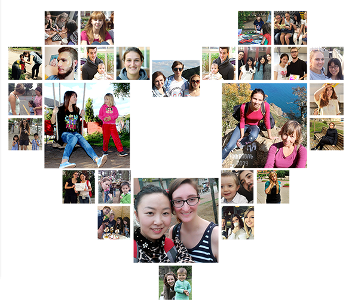
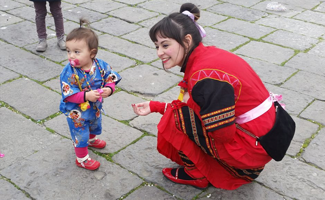
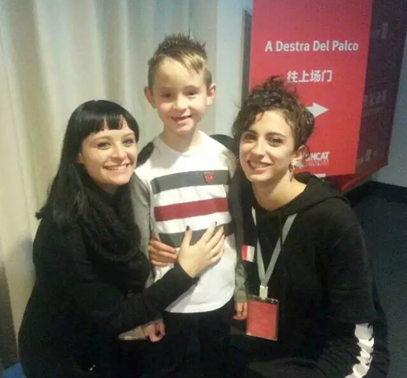
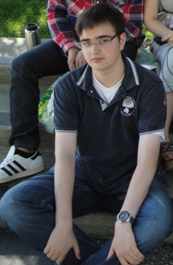
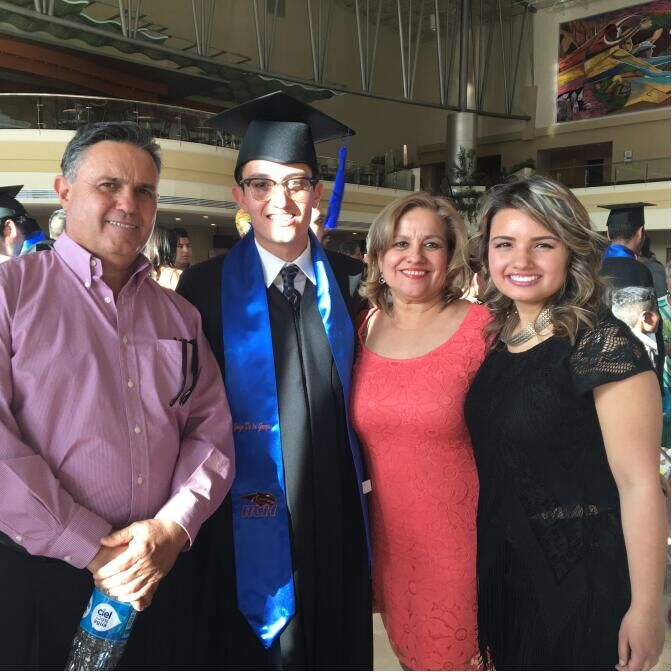

互惠动态
|
|
来ASC，遇见最好的互惠生！

好友印象
性格活泼，开朗，喜欢孩子，喜欢学习和研究中国文化，每次交流涉及到中国文化方面，她都能侃侃而谈。
爱好广泛，喜欢烹饪，阅读，看电视，旅游，跑步等，这次来中国做互惠生，相信一定会生一次美妙的经历。
看到好友这么精彩的介绍，相信大家都很期待这个多才多艺的互惠生
Simona。话不多说，小编带你走进她的生活吧！

基本信息 Simona
国籍：意大利
年龄：27
教育背景：那不勒斯东方大学的中国语言文学专业
互惠时长：3-6个月
来华时间：最早9月，最晚十月
经历：毕业后主要做老师和翻译，英语流利且有丰富的教学经验


■ 姓名：Florian 就读学校：阿尔伯特-路德维希弗莱堡大学
国籍：德国 互惠时长：6-12个月
年龄：22 来华时间：最早9月23日，最晚10月31日
■ 兴趣爱好：唱歌，交友，阅读，散步，听音乐打羽毛球，弹钢琴等。

■ 姓名：Jorje 就读学校：奇瓦瓦州技术研究学院
国籍：墨西哥 互惠时长：一年或更长
年龄：26 来华时间：最早8月，最晚12月
■ 兴趣爱好：中文，健身，游泳，举重，电子琴，手工制作等。

关于互惠，您了解得够多么？
请外国学生来家庭照顾孩子，辅导孩子外语？
只了解这些是不够的！
获取更多信息请参考以下方式：
联系ASC：
电话：86-21-61116069(上海中心）
86-25-66065662（南京中心）
手机：15601666586（可加微信）
Q Q：3259637585
微信：asc-center
邮箱：info@asc-center.com
网站：www.asc-aupair.com

感谢您对我们的关注